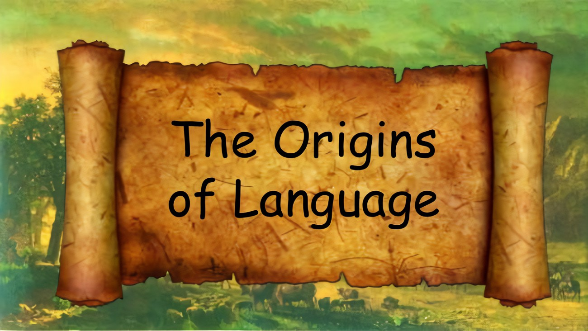

The Origins of Language
The language are very different form each other and very unique.Speaking and studing other language is the great way to develop your mind and get some knowledge. Let's see some exsamples of Origin of some of the oldest languages.
Tamil language
The origin of Tamil language is taking place in India. It has the oldest literature between the Dravidian languages. The history of Tamil is divided into three periods. Early Tamil involves the six centuries before and six centuries after Christ. The medieval Tamil was created in the middle of the sixth and twelfth centuries. And the new Tamil started to be from the twelfth century to nowadays. The Tamil writing system is raised from the Brahmi script. The shape of letters changed extremely over the time. The main appendage to the alphabet was a combination of Grantha letters to write unassimilated Sanskrit words, although a few letters with irregular shapes were normalized during the modern period. A script known as Vatteluttu ( " Round Script " ) is also in common use. An interesting fact about the Tamil language is that Tamil is the only language that is also worshiped as a God. According to Hindu legend, Tamil or in incarnation from Tamil Thai ( Mother Tamil ) was created by Lord Shiva. Murugan, worshiped as the Tamil God, together with Agastya, brought it to the people. The characteristic about the letter you pronounce a letter in a word, the more understood you will be in speaking the Tamil language. The Tamil language is spoken by Tamils in India, Sri Lanka, Malaysia, and Singapore. This is an official language of South India, Singapore, and Sri Lanka.
Telugu language
Telugu belongs to the South Central branch of the Dravidian language family. It originated in the 1st century A.D. It was created from Pahlava script and it is very similar to the script of Kannada. It has an Indo-Aryan vocabulary to a large rate and has a main influence of Sanskrit. Telugu is written with a syllabic alphabet in which all consonants have an inherent vowel. Telugu is written from left to right. It's one language whose vocabulary is widely obtained from two great language families in India named Sanskrit ( Indo-Aryan ) and Dravidian. The characteristic of this language is that Telugu has more letters in its alphabet than any other Indian languages. There are 56 letters ( 18 vowels and 38 consonants, out of which 2 vowels and 2 consonants are removed ). An interesting fact about it is that Telugu has the most number of Samethalu ( idioms ) as compared to any other language. It's the official language of the Indian state of Andhra Pradesh where it is oriented and developed. Also, spoken in the neighboring states of Tamil Nadu, Karnataka, Maharashtra, Orissa, and Chhattisgarh.
Malayalam language
The origin of Malayalam ruins of discussion among scholars. As Malai means mountain the word 'M' apparently refers to either people or the language of the mountain regions. The new Malayalam alphabet was originally used to write Sanskrit only, but nowadays is used to write spoken Malayalam. The script was developed in the 13th century from an offspring of the Brahmi scripts which include 54 letters, 18 of which all consonants have an essential vowel. Letters have a round shape, so sometimes it is called " round alphabet. " Malayalam language has a large vocabulary, with around 90,000 words written down in the dictionary. Some words are borrowed from the Sanskrit and Proto-Dravidian language. Even vocabulary borrowed from Sanskrit is changed. For example, the Sanskrit root of Karma is actually Karman - is also changed to Karmam, Ramayana - Ramayanam, Narasimha - Narasimham, etc. This is the official language of Kerala, Lakshadweep, and Puducherry. The interesting fact about the Malayalam language is that in a constant state of evolution, the next time you explore the language, Malayalam will have added a whole new set of quirky facts to itself.
Georgian language
The creation of Georgian alphabet is attribute to King Pharnavar who was in power in 3rd century BC. The 11lh century historian Leonti Mroveli cited to Pharnavar as the first Georgian King trusted with creating the Georgian alphabet. According to Georgian researchers, the Georgian alphabet produces from Phoenician letters or Greek alphabet systems. The Georgian alphabet is crossed as long and complicated path of development. The currently used alphabet, Mkhedruli appeared through the transformation of Nuskhuri (minuscule) letters while Nukhuri takes its origin from Asomtavruli (majuscule). The characteristic of the Georgian language is that it never lost its sacrosanct status. The interesting fact about it is that Ioane Zosime described the Georgian language as beautiful and blessed by the name of the Lord and it's still considered to be the language of God in the universe. It's a official language of Georgia including Abkhazia and Ossetia.
Armenian language
It was created by Mesrop Mashtots in 405 AD. The letters were based on Greek. It has 36 letters. Armenian is an Indo-European language spoken most of in Armenia and in Nagorno-Karabakh region of the South Caucasus and many other countries around the world. Totally, there are approximately 1.2 million Armenians speakers. The Armenian alphabet was developed in the late 4th century AD, by the order of King Vramshapuh. He asked Mashtots to create a new alphabet for Armenian people. Before that they were written with ' cuneiform ' scripts. Mesrop took a trip to Alexandria to study the principles of writing and understood that the Greek alphabet will be a great example in the creation of the future Armenian alphabet. It's the official language of Armenia and Artsakh. The Armenian language is influenced by neighboring countries' languages such as Turkish, Russian, and Persian. The interesting fact about the Armenian alphabet is that the language has totally different punctuation marks than Western languages.